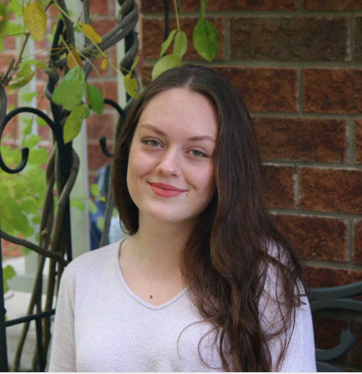

Home
HomeHi, my name is Julia!
I'm a UX Design Student

Hi there! My name is Julia Purza and I am a UX design student at Wilfrid Laurier University in Brantford, Ontario.
Since I can remember, I loved drawing, painting, and making use of any traditional media. I went to Conestoga College for a program called Design Foundations which introduced me to traditional art, graphic design and web design. This is where I first heard about UX!
I decided to apply to Laurier’s new UX program and here I am. I am currently a third year UX student studying to become a future UX designer in the rising tech city of Waterloo, ON. My skills range from traditional art and graphic design to UX and web design. In addition, I used my coding skills to code this website from scratch using HTML5, CSS, and PHP in Visual Studio Code and I am slowly working my way to expanding these skills.